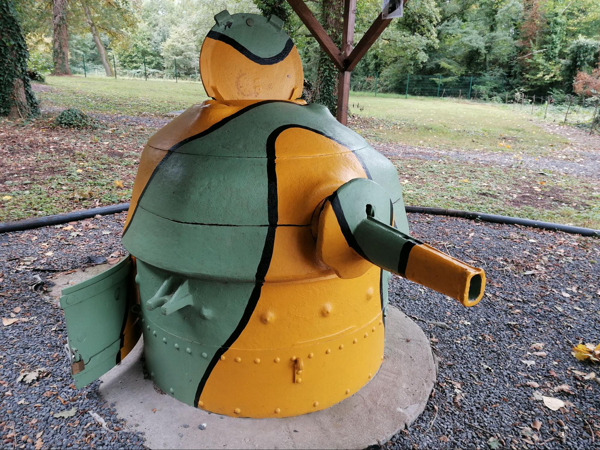
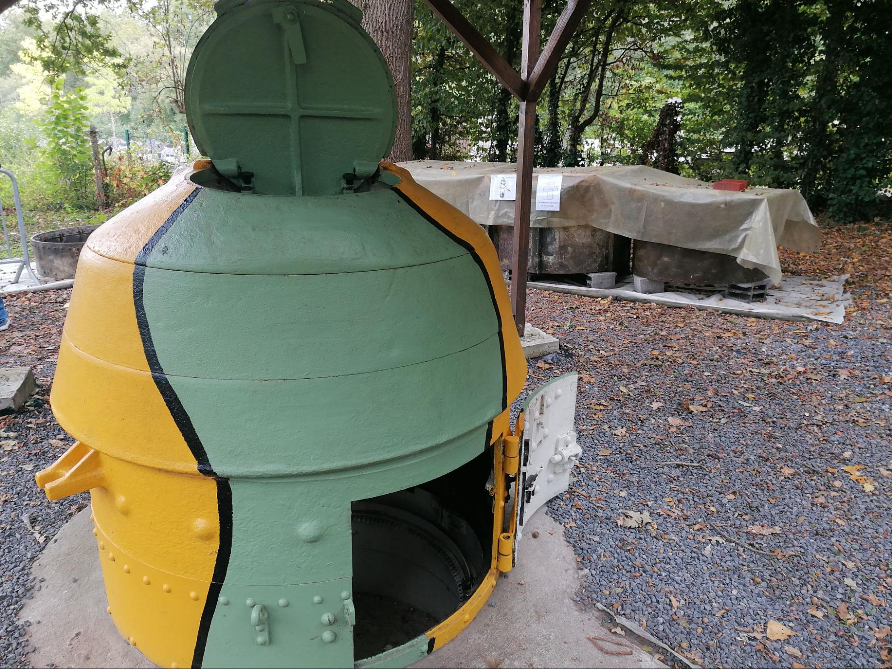
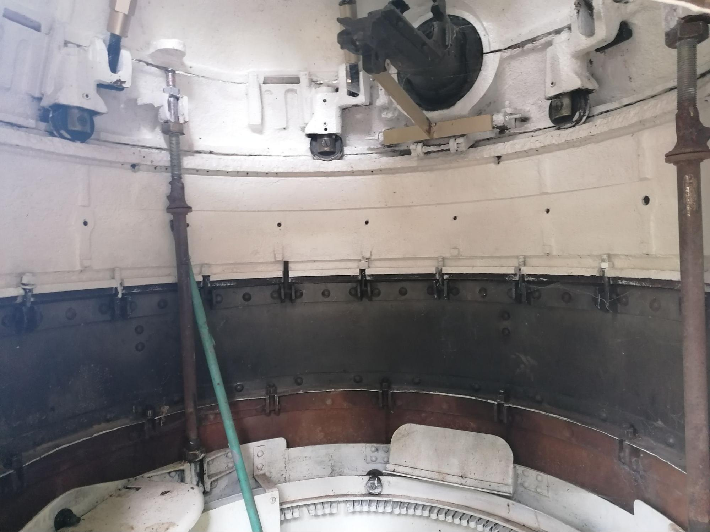
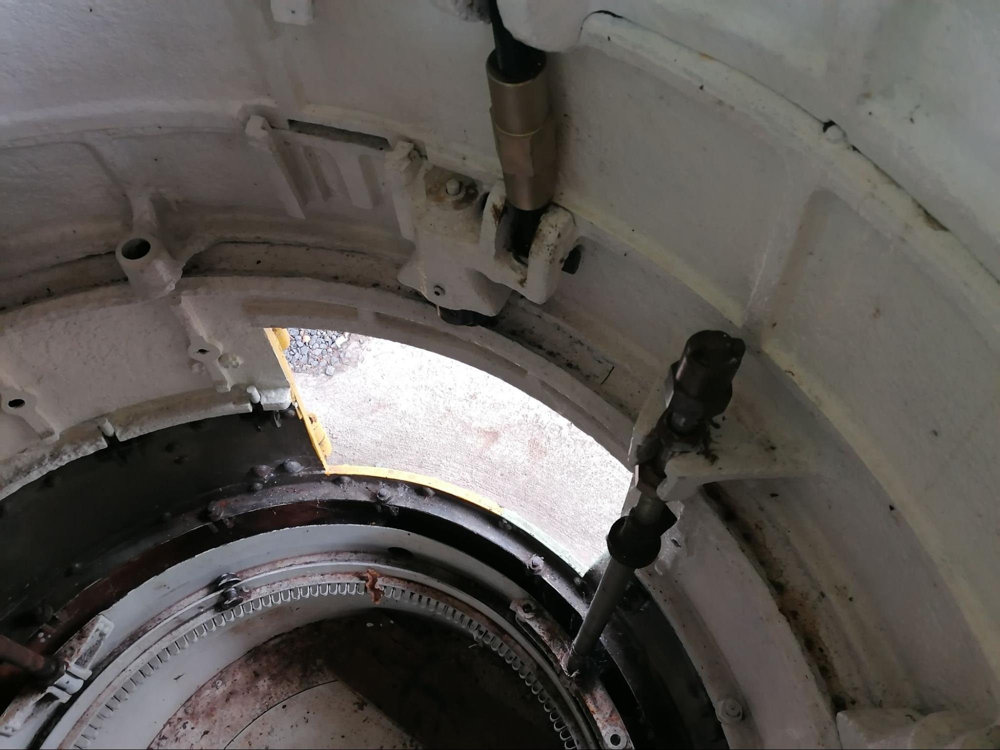

La Tourelle démontable STG modèles 1935 et 1937, souvent désignée sous l’abréviation TDPM 35/37 (Tourelle Déplaçable Pour Mitrailleuses), est un élément emblématique des fortifications françaises de l’entre-deux-guerres. Conçue pour renforcer les intervalles de la ligne Maginot et protéger les points d’appui d’infanterie, elle représente une solution défensive mobile, relativement économique et rapide à installer. Son développement s’inscrit dans la volonté de l’armée française d’assurer une continuité des feux d’infanterie tout en offrant une protection blindée efficace aux servants de mitrailleuses.
Le principe de cette tourelle apparaît dès la fin des années 1920, lorsque les autorités militaires françaises cherchent un système capable de compléter les ouvrages permanents de la ligne Maginot sans engager les coûts considérables des gros blocs bétonnés. Les besoins deviennent particulièrement pressants au début des années 1930, lorsque le Conseil Supérieur de la Guerre demande un renforcement des secteurs moins fortifiés. La Section Technique du Génie (STG) élabore alors un modèle démontable pouvant être transporté puis installé rapidement dans des cuves préparées à l’avance.
Deux versions principales furent produites : le modèle 1935 et le modèle 1937. Le modèle 1935 constitue la version initiale, relativement sophistiquée, mais son coût élevé pousse rapidement l’état-major à demander une version simplifiée. Cette évolution aboutit au modèle 1937, plus économique et plus pratique. Plusieurs améliorations sont alors introduites : un siège réglable pour le tireur, un système simplifié de pointage, la suppression de certains équipements prévus pour un éventuel canon antichar de 25 mm, ainsi qu’un nouveau périscope de type « K ». Le système complexe de tir nocturne par cames réglables, jugé trop coûteux, est également abandonné.
La structure de la tourelle se compose de deux ensembles principaux : une partie fixe et une partie mobile blindée. La partie fixe est enterrée ou encastrée dans une cuve en béton. Elle comprend une couronne en acier moulé servant de support à la partie tournante. Cette couronne repose sur un chemin de roulement permettant une rotation complète à 360 degrés. L’accès se fait par une porte reliée à une tranchée ou à un petit abri bétonné.
La partie mobile constitue l’élément visible de la tourelle. Fabriquée en acier moulé, elle est composée de plusieurs couronnes superposées assemblées par boulons. Son blindage varie de 30 à 84 mm selon les zones, la protection maximale se situant autour de la rotule de l’arme. L’ensemble est conçu pour résister aux tirs d’armes légères, aux mitrailleuses lourdes et aux éclats d’artillerie. Les essais montrent cependant que la protection contre les canons antichars de 25 ou 37 mm reste limitée.
L’armement principal est constitué d’une mitrailleuse Hotchkiss modèle 1914 de 8 mm montée sur un affût spécial. Une seconde arme de réserve est généralement stockée à l’intérieur. Le pointage s’effectue grâce à deux manivelles permettant le réglage en direction et en hauteur. Le modèle 1935 dispose d’un système complexe de cames réglables destiné à adapter automatiquement la hausse au terrain environnant afin de faciliter le tir de nuit. Ce dispositif est supprimé sur le modèle 1937 au profit d’un système plus simple et moins coûteux.
L’intérieur de la tourelle est particulièrement exigu. Une nacelle suspendue accueille le tireur ainsi que les caisses de munitions. Malgré sa compacité, l’équipement comprend plusieurs dispositifs ingénieux : collecteurs d’étuis, sacs étanches pour l’évacuation des douilles et système de ventilation utilisant l’effet Venturi créé par les tirs de la mitrailleuse. Ce système présente néanmoins des défauts importants, notamment une mauvaise évacuation des fumées lorsque l’arme cesse de tirer. Pendant les combats de 1940, l’enfumage intérieur constitue d’ailleurs un problème fréquent signalé par les équipages.
La tourelle démontable possède également une dimension logistique importante. Son poids total atteint environ 1 420 kg, mais chaque élément reste transportable séparément, les pièces pesant entre 150 et 280 kg. Cette modularité facilite le transport par camion et l’installation rapide en période de mobilisation. De nombreuses cuves bétonnées furent ainsi construites avant guerre dans les différents secteurs fortifiés afin de recevoir les tourelles au moment voulu.
Entre 1933 et 1940, plusieurs centaines d’exemplaires sont fabriqués par différentes entreprises françaises. Les premières séries sont livrées aux régions fortifiées du nord-est, notamment dans les secteurs de Belfort, des Ardennes et du Nord. Malgré cet effort industriel, les besoins de l’armée française dépassent largement les capacités de production. En 1938, les estimations évoquent un besoin supérieur à 650 unités, alors qu’un peu plus de 400 seulement sont en service ou en fabrication.
Sur le terrain, les tourelles démontables jouent un rôle essentiellement défensif. Elles servent à verrouiller les intervalles entre les grands ouvrages de la ligne Maginot, à défendre les routes, les lisières de forêt ou les points sensibles. Leur faible silhouette et leur blindage leur permettent de constituer des positions de tir discrètes et relativement difficiles à neutraliser. Toutefois, leur espace intérieur réduit, leur ventilation imparfaite et leur vulnérabilité face aux pièces antichars modernes limitent leur efficacité dans une guerre mobile comme celle de 1940.
Malgré ces limites, la tourelle démontable modèle 1935-1937 reste un exemple remarquable de l’ingénierie défensive française de l’époque. Elle illustre parfaitement la recherche d’un compromis entre mobilité, protection et coût de production dans le contexte de la fortification de la ligne Maginot.




une tourelle démontable totalement refaite par l’association Maginot Escaut.